Soluções em Visão Computacional, Robótica e Automação Industrial
Fundada em 2022, a AgroSharp atua nos segmentos de Visão Computacional, Robótica e Automação Industrial, com o propósito de levar maior eficiência e produtividade para a Indústria e o Agronegócio.
A AgroSharp fornece uma solução completa, personalizada e totalmente integrada para seus clientes, desenvolvendo desde a parte Mecânica e Estrutural das máquinas, até os Sistemas Eletrônicos e toda a parte de Software (incluindo algoritmos de Inteligência Artificial e Visão Computacional).
Sistemas de inspeção automática, detecção de defeitos, classificação de produtos e monitoramento em tempo real com IA.
Braços robóticos colaborativos e sistemas de picking & placing.
Desenvolvimento de máquinas, linhas de produção completamente integradas e soluções IoT para fábricas inteligentes.
Tecnologia capaz de automatizar todo o processo de ordenha por meio de um Braço Robótico e um Sistema de Visão Computacional, levando conforto para o produtor e maior produtividade para as fazendas brasileiras.
Desenvolvimento de diferentes máquinas que compõem a linha de produção da empresa Ello Fertiliza, tornando seu processo produtivo mais eficiente e completamente automatizado.